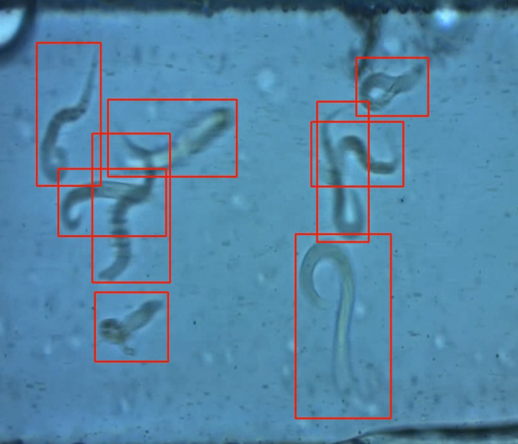
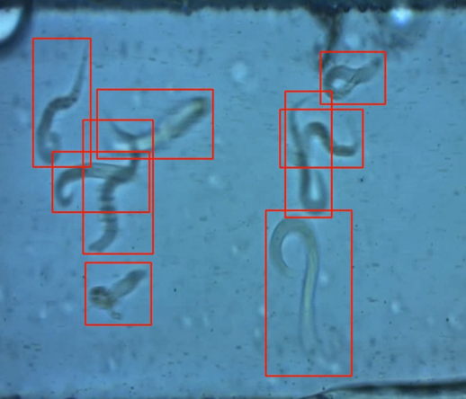
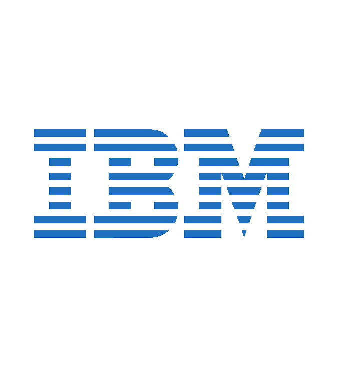

Hey there, I'm Mubariz.
I've recently completed my Computer Science undergraduate degree at Toronto Metropolitan University. I have 2 years of professional software development experience within Translational Medicine and Compiler Development.
Have a look at some of the teams and projects I've worked on below.
Experience
 

Software Developer
At the Laboratory for Translational Medicine I was tasked with developing a Python extension for the medical image analysis and manipulation software 3D Slicer. The extension's core capability was to allow users to perform easy and dynamic tracking verification of an ROI, defined by a 3D segmentation, as it moves through a set of time-series 2D MRI images.
Another translational research project I was assigned to was the technical integration of a C. Elegans worm detection algorithm using YOLOv5.


Compiler Development Intern
During my internship at IBM Canada I joined the C/C++ on z/OS compiler backend team. I was responsible for improving and maintaining the compiler performance measurement pipeline. I was also able to contribute to the compiler backend with a fix related to how 32-bit floating-point variadic arguments are allocated to their registers, according to the XPLINK64 calling convention.
Projects

Human Resources Portal
Human Resources Portal was the course project for CPS610: Database Systems II. Here I was the dedicated backend developer, which was built using PHP, Nginx and Ubuntu, with Orcale 12c as our database. Our database also incorporated various PL/SQL features such as procedures, functions, and triggers.